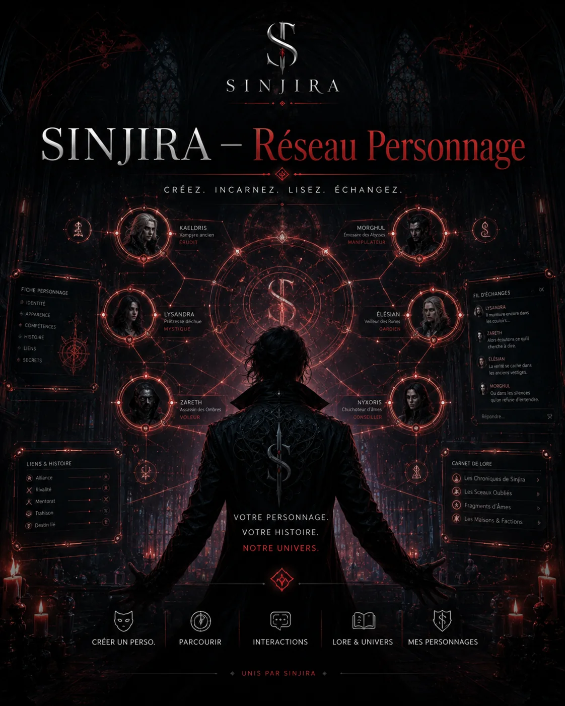

Rôle-play · identité fictive séparée
Réseau des personnages SINJIRA
Interagissez, discutez et faites vivre votre personnage. Tout ce qui est écrit ici est du rôle-play et ne devient jamais canonique sans décision explicite de Benoit Cantin.
